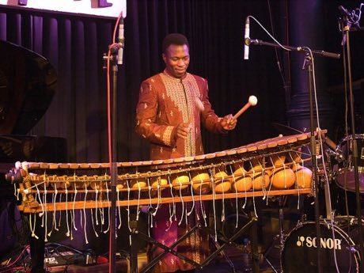

Home / Crossroads and Golden Ages / Africa: Sahel, West and Central
Playable heritage gameBalafon Gourd Xylophone
Also known as Bala · balafon
The balafon is a wooden-bar instrument of the Mande peoples of Mali, Guinea and Burkina Faso. Each bar hangs over a dried gourd, and players strike the bars with two soft mallets, answering and echoing short phrases.


How to play
- Twelve bars lie in order of pitch, shortest and highest on the right.
- Listen to the phrase the instrument plays and watch the bars light up.
- Then echo it: strike the same bars in the same rhythm.
- Each song has four short phrases; try the pairs, then the five-note frame.
Rules at a glance
- The bars follow an almost equal division of the octave into seven steps, each about 171 cents.
- Each phrase is four beats; the computer plays it, then you echo it.
- A stroke on the beat is perfect, a near one is good, and extra strokes cost points.
- The five-note frame leaves out two of the seven notes, as pentatonic instruments do.
About the tradition
Balafons are played across the Mande lands of West Africa, from solo pieces to ensembles with drums and song. Makers carve bars from slowly dried hardwood and tune them by shaving the wood, and the craft passes from family to family.
Origins
Usually placed in the era of Crossroads and Golden Ages (about 500 to 1500), although its exact origins are uncertain, within the cultural world of Africa: Sahel, West and Central.
Credits
- Tradition: Mande balafon music; phrases written for this game
- Photo: OhWeh, CC BY-SA 2.5, source on Wikimedia Commons
- Text: CC BY-SA 4.0, World Heritage Games.
Sources

Get the app
Balafon Gourd Xylophone is one of 10 drums and rhythms in the Drum Music of the World app for iPhone, iPad and Android. Submitted to the App Store and Google Play; in review. Store links appear here the day it goes live. One app, many traditions, no account needed.
More games to play


_Unterfahrt_2010-03-11-001.jpg){kind=link}
More from Mali


Dogon Granary Builder
Mali · Crafts and making
Imzad Fiddle
Niger +2 · Musical instruments

Mud Plaster Season
Mali · Crafts and making